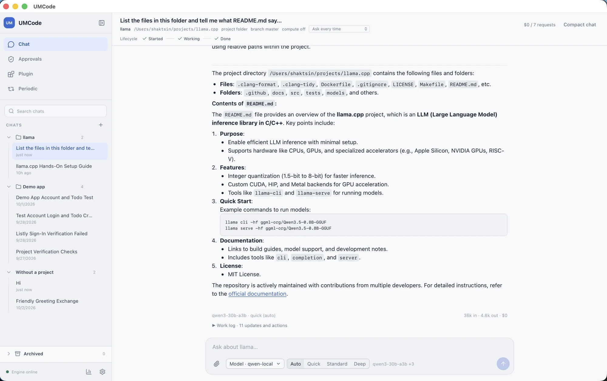

A coding agent that doesn't stop at rate limits.
UMCode is a Mac app for coding tasks with the models you choose: hosted providers, or local models running in Ollama or llama.cpp. Put models in a pool and it moves to the next one when a model hits its limit, while token optimization keeps each task's context lean.
Free and open source (MIT). Needs macOS 14 or later. Apple Silicon and Intel.

Bring any model, hosted or local.
Connect the providers you already use, or point UMCode at a model on your own machine through Ollama or llama.cpp. Chats and settings are stored on your Mac, and prompts go only to the models you configure.
- Built for coding in a project
- Pick a folder and work inside it with its
UMCODE.mdinstructions. Chats stay with the project, and you can open a clean chat or a side chat with context. - Hosted or local
- Use any provider and model ID you have configured, or a local model served by Ollama or llama.cpp. Switch models per chat, or combine several into an ordered pool.
- Actions you can see
- Tool actions are visible in the chat. Sensitive operations wait for your approval before they run.
- Keys in the Keychain
- Provider API keys are stored in the macOS Keychain, not in project files or chat history.
- Plugins you can inspect
- Install Agent Plugins, or Codex and Claude plugin folders with skills, MCP servers and hooks. See what a plugin can do before you install it.
When a model hits its limit, the next one picks up.
Put models in order, hosted and local together if you like. If a provider reports a quota or rate limit, UMCode continues with the next model in the pool, so a long task doesn't stop halfway.
- large-modelansweringrate limit reached
- mid-modelnext in poolanswering
- local-modelstandby
Illustration with example names. You choose the models and their order.
Spend fewer tokens on every task.
A coding agent re-sends a lot: the whole conversation, every tool definition, every long log. UMCode's token optimization trims that, and it doesn't do it by asking the model to think less.
- Context built from the work, not the transcript
- Each model call gets a compact record of the goal, what is done and what is still unproven, instead of a replay of the whole chat.
- Long tool output, shortened
- Big shell logs, repeated passing checks and search results are reduced for the model. The full output stays in your chat and the work log.
- Tools loaded when needed
- Core coding tools are always there. Specialist tools are added when a task calls for them, so each call carries fewer tool definitions.
- Checks that stay honest
- A passing test counts only while it is still true. Edit a file after the tests passed and UMCode marks them as needing a re-run.
- Project memory you can read
- Verified, lasting notes about the project go in
UMCODE.md, so the agent doesn't rediscover your commands and conventions every time. - Cost you can see
- Tokens in, tokens out and cost appear under every reply, so you can tell what a task actually used.
Token optimization is off in a fresh install. Turn it on in Settings under Token optimization and it applies to new turns in every chat. Measured comparisons are still in progress, so there are no savings figures on this page yet.
Install it in a minute.
The app is signed with an Apple Developer ID and notarized, so macOS opens it without a security warning.
Download the app
Open the disk image and drag UMCode to Applications. Then add a provider key in Settings and pick a project folder.
Download UMCode.dmgAll versions and checksums are on the releases page.
Build it from source
You need Go 1.24 or later, plus Node.js for the desktop app.
git clone https://github.com/shaktsin/umcode
cd umcode
make app-buildThe engine guide covers every make target.
Early, open, and ready for contributors.
UMCode is MIT-licensed and young. Bug reports, plugins and pull requests are welcome. If something in the app surprised you, open an issue and say what you expected.